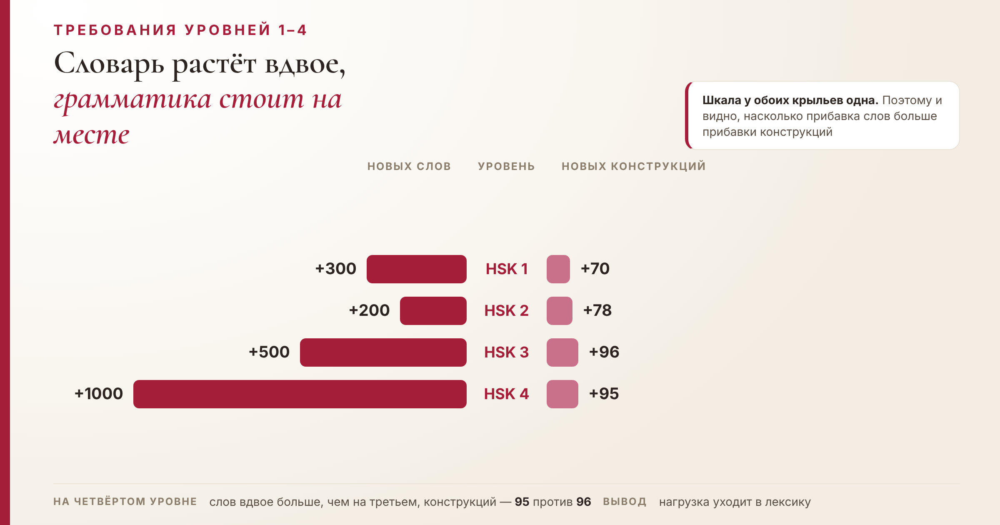
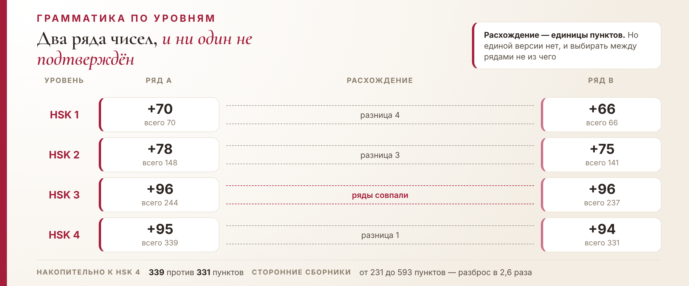

Экзамен
Что нужно знать для HSK 1–4: грамматика, которой нет в списках слов


Требования уровня состоят из четырёх частей, и о трёх из них спорить не о чем: слова и знаки посчитаны. Четвёртая — грамматика, и вот с ней единого счёта нет.
Разберём, сколько конструкций требует каждый уровень, почему эти числа в источниках разные и что вообще значит «знать конструкцию» применительно к экзамену.
Короткий ответ: из чего состоят требования уровня
Четыре строки, и только одна из них спорная.
| Что требует уровень | Как с числами | Источники |
|---|---|---|
| Слова | числа сходятся | сошлось в нескольких источниках |
| Знаки для узнавания | числа сходятся | сошлось в нескольких источниках |
| Знаки для письма от руки | числа сходятся | сошлось в нескольких источниках |
| Грамматика | единого счёта нет | в обращении два ряда чисел |
По словам и знакам всё в порядке. Сводные таблицы действующего стандарта совпадают между собой, и прибавки складываются в накопительные цифры без остатка — это у нас проверено в статьях по уровням.
С грамматикой иначе. В обращении два ряда чисел, а сторонние сборники конструкций различаются по объёму в несколько раз. Разберём по порядку, потому что для подготовки это важнее, чем кажется.
Почему это вообще важно знать до подготовки. Со словами всё просто: есть число, есть список, видно, сколько пройдено. С грамматикой такой опоры нет, и люди либо считают, что её «подхватят по ходу», либо берут первый попавшийся сборник и идут по нему как по словнику.
Оба способа дают один и тот же провал в письменной части: конструкции узнаются, но не употребляются. Разберём, откуда берётся эта разница и что с ней делать.
Сразу скажу, чего вы здесь не найдёте: перечня самих конструкций. Его не существует в одном общепринятом виде, и выдумывать свой я не стану.
Грамматика — требование, по которому числа не сходятся
Вот оба ряда, которые встречаются в сводных таблицах.
| Уровень | Ряд A, новых | Всего | Ряд B, новых | Всего | Разница |
|---|---|---|---|---|---|
| HSK 1 | +70 | 70 | +66 | 66 | расходятся на 4 |
| HSK 2 | +78 | 148 | +75 | 141 | расходятся на 3 |
| HSK 3 | +96 | 244 | +96 | 237 | прибавки совпали |
| HSK 4 | +95 | 339 | +94 | 331 | расходятся на 1 |
Расхождение невелико — единицы пунктов на уровень, не десятки. Накопительно к четвёртому уровню получается 339 по одному ряду и 331 по другому.
Любопытная подробность: на третьем уровне оба ряда дают одну и ту же прибавку — девяносто шесть пунктов. Накопительные суммы у них при этом всё равно разные: разница, набранная на первых двух уровнях, никуда не девается.
Какой ряд верный, я не знаю и выбирать не стану. Один встречается чаще, второй помечен как более поздняя версия, и подтверждения нет ни у одного.
Что из этого следует практически: считайте, что на уровень приходится около сотни новых конструкций — на первом чуть меньше, на третьем и четвёртом чуть больше. Эта точность и есть вся, которая у нас есть.
И ещё одно, что стоит знать до того, как вы откроете чей-то сборник: расхождение в несколько пунктов — мелочь по сравнению с тем, что творится в сторонних сводках. Об этом следующий раздел.
Сколько сводок, столько чисел
Сборники «всей грамматики HSK» составляют преподаватели, авторы приложений и энтузиасты. Это полезная работа, но единым перечнем она не стала.

Разброс по объёму — 362 пунктов разницы: от 231 до 593 на все уровни, то есть в 2,6 раза. Это не ошибки составителей, а разные решения о том, что считать отдельным пунктом.
Один объединяет конструкцию со всеми её вариантами в одну строку, другой разносит варианты по разным. Один включает служебные слова, другой считает их лексикой.
Отсюда правило, которое я советую держать в голове: длина сборника ничего не говорит о его полноте. Сборник на двести пунктов может покрывать то же, что сборник на шестьсот.
Как тогда выбирать. Смотрите не на число, а на то, есть ли у каждой конструкции пример и указано ли, с какого уровня она нужна. Без этих двух вещей сборник бесполезен, какой бы длины он ни был.
Где грамматика растёт, а где останавливается
Теперь самое интересное — что происходит с грамматикой при переходе на четвёртый уровень.
| Уровень | Новых слов | Новых конструкций |
|---|---|---|
| HSK 1 | +300 | +70 |
| HSK 2 | +200 | +78 |
| HSK 3 | +500 | +96 |
| HSK 4 | +1000 | +95 |
Посмотрите на две последние строки. Прибавка слов на четвёртом уровне вдвое больше, чем на третьем, а конструкций не прибавляется вовсе — по обоим рядам их там даже чуть меньше.
Это и объясняет ощущение, которое ученики описывают одинаково: «на четвёртом уровне не стало труднее по правилам, стало просто очень много слов».
Для подготовки вывод практический. До третьего уровня основная работа структурная: вы собираете предложения новых типов. На четвёртом она становится словарной, а грамматика переходит в режим закрепления.
Это же объясняет, почему на четвёртом уровне помогает чтение, а не разбор правил: конструкции вы уже видели, их нужно встретить много раз в разных словах.
Как я проверяю, знает ли ученик конструкцию
Ученик перед третьим уровнем сказал, что грамматику закрыл: прошёл сборник на двести с лишним пунктов и отметил галочками каждый. Я предложила проверить одну конструкцию — ту, что с вынесенным дополнением.
Он её узнал мгновенно: назвал схему, объяснил порядок слов, привёл пример из сборника. На вопрос, зачем она нужна, ответил тоже верно — по учебнику.
Потом я попросила сказать ту же мысль своими словами про вещь у него на столе. Получилась обычная фраза без этой конструкции — он её обошёл, потому что так проще.
Это и есть разрыв между «отметил в списке» и «знаю». В заданиях на выбор он эту конструкцию находил, а в собственной речи не употреблял ни разу.
Дальше мы поделили его сборник на две стопки. В первую пошли конструкции, которые достаточно узнавать: они встречаются в чтении и аудировании. Во вторую — те, что нужны в своих фразах.
Вторая стопка оказалась короче первой примерно втрое. Это и был настоящий объём работы, хотя по списку выходило, что сделано уже всё.
Тренировали мы вторую стопку просто: по три своих предложения на конструкцию, вслух и письменно, с разными словами. На каждую уходило минут десять.
Вывод, который я делаю: галочка в списке грамматики не означает ничего, пока конструкция не появилась в вашей собственной фразе. Проверяется это за минуту — попросите себя сказать то же самое иначе.
Что значит «знать конструкцию»
Список грамматики обычно устроен как перечень галочек, а требования уровня на самом деле двухслойные.
Первый слой — узнавание. Конструкция встречается в тексте или в записи, и её нужно понять. Это всё, что требуется от большинства конструкций на младших уровнях.
Второй слой — собственное употребление. Нужно построить фразу самому, и проверяется это в письменных заданиях. Начинается такое с третьего уровня, где появляется письменная часть.
Разница между слоями огромная, а в списках она никак не помечена: пункт выглядит одинаково независимо от того, узнавать его или строить.
Отсюда самый практичный совет этой статьи: проходя список, помечайте каждую конструкцию своей пометкой — узнаю или умею сказать. Вторая стопка будет заметно короче, и работать нужно с ней.
Чего нет в списках грамматики
Три вещи, которых в любом сборнике не будет, и это не упрёк составителям.
- Единого перечня — у каждого составителя свой состав и свой счёт.
- Разметки по заданиям — в каком задании спросят конструкцию, нигде не сказано.
- Порога «знаю» — список не говорит, узнавать конструкцию или строить её самому.
Про отсутствие разметки по заданиям. Узнать, в каком разделе экзамена спросят конструкцию, по списку нельзя. Но косвенно это видно по уровню: то, что появилось недавно, обычно и проверяется.
Про порог «знаю». Его каждый ставит себе сам, и чаще всего ставит слишком низко: отметил галочкой, понял объяснение — и дальше не проверял.
Что с этим делать практически. Берите конструкцию и составляйте три фразы с разными словами: про работу, про семью, про сегодняшний день. Если третья даётся так же легко, как первая, конструкция ваша.
Если вы готовитесь по сборнику из приложения
Сборники в приложениях удобны: конструкции разложены по уровням, к каждой есть примеры и упражнения. Пользоваться ими можно, если помнить три вещи.
Первое. Состав у сборника авторский, и совпадать с чьим-то другим он не обязан. Если в вашем сборнике двести пунктов, а у знакомого четыреста, это не значит, что вы учите меньше.
Второе. Разметка по уровням в сборниках делается по прежнему стандарту чаще, чем по действующему: обновляют их не все и не сразу.
Третье. Упражнения в приложениях почти всегда на узнавание: выбрать правильный вариант, вставить пропущенное. Второй слой — собственную фразу — приложение не проверит, это придётся делать самостоятельно или с преподавателем.
Как это совмещать: сборник берите как перечень тем, а тренируйте фразами. Десять минут на конструкцию с тремя своими примерами дают больше, чем сорок упражнений на выбор.
Слова и иероглифы: сводка с передачей
Коротко, потому что по каждому пункту у нас есть отдельный разбор.
Слова накопительно: триста на первом уровне, пятьсот на втором, тысяча на третьем, две тысячи на четвёртом. Прибавка четвёртого уровня равна всему, что накоплено за первые три.
Знаки для узнавания накопительно: к четвёртому уровню тысяча девяносто шесть. Знаки для письма от руки: четыреста, и на первом уровне их не требуется вовсе — список начинается со второго.
Как эти требования растут от уровня к уровню, у нас разобрано здесь: как меняются требования к числу слов и знаков. Разборы самих уровней — здесь: первый уровень, второй, третий и четвёртый.
Частые ошибки
- Считать грамматику приложением к словам. Это отдельное требование уровня.
- Верить числу пунктов в сборнике. Состав у всех разный.
- Отмечать галочку после объяснения. Понял — ещё не знаю.
- Готовить все конструкции одинаково. Часть достаточно узнавать.
- Ждать на четвёртом уровне вала новых правил. Там растёт словарь, а не грамматика.
Не понимаете, какие конструкции у вас только «узнаются»? На пробном занятии мы берём несколько конструкций вашего уровня и проверяем их не выбором варианта, а вашей собственной фразой.
Приходите на пробное занятие, форматы и программа — здесь: онлайн-курсы китайского.
Если делать сегодня одно: возьмите любую конструкцию, которую считаете выученной, и скажите с ней три фразы про свой день. Там, где начнёте запинаться, и есть ваша настоящая грамматика.
Чего в статье нет намеренно
- Перечня конструкций. Единого списка не существует, а свой я не выдумываю.
- Выбора между двумя рядами чисел. Подтверждения нет ни у одного.
- Официального деления грамматики на разделы. Найти его не удалось.
- Разбора отдельных конструкций. Это уровневые статьи блога.
- Имён приложений и сборников. Блог на сторонние ресурсы не ссылается.
И ещё об одном умолчании. Я не называю ни один сборник лучшим: пока состав у всех разный, сравнивать их по длине бессмысленно, а по качеству — можно только на своих примерах.
Частые вопросы (FAQ)
Что входит в требования уровня HSK?
Четыре вещи: слова, знаки для узнавания, знаки для письма от руки и грамматические конструкции. По первым трём числа в источниках сходятся, по грамматике — нет.
Сколько грамматических конструкций нужно знать на HSK 1?
Около семидесяти. Точнее сказать нельзя: в сводных таблицах стандарта ходят два ряда чисел, и по первому уровню они дают семьдесят и шестьдесят шесть. Разница невелика, но выбирать между ними я не берусь.
Где взять список грамматики HSK 4?
Единого перечня в открытом виде нет. Сборники, которые встречаются в сети, собраны составителями и расходятся по объёму в два с половиной раза: от двух с небольшим сотен пунктов до почти шестисот на все девять уровней.
Почему в разных источниках разное число грамматических пунктов?
Потому что счёт у них разный: одни берут одну редакцию сводных таблиц, другие — более позднюю, третьи составляют свой перечень и объединяют или дробят пункты. Со словами и знаками такого не происходит.
Что значит «знать конструкцию» на экзамене?
На младших уровнях — узнавать её в чтении и на слух. Начиная с третьего часть конструкций нужно уметь употребить самому: в письменных заданиях спрашивают не узнавание, а собственную фразу.
Сколько слов и иероглифов нужно на уровнях 1–4?
Накопительно: триста слов на первом уровне, пятьсот на втором, тысяча на третьем и две тысячи на четвёртом. Знаков для узнавания к четвёртому уровню тысяча девяносто шесть, для письма от руки четыреста. Подробные разборы по каждому уровню у нас есть отдельно.
И напоследок то, что кажется мне важнее частных чисел. Со словами и знаками подготовка измеряется: столько-то выучено, столько-то осталось. С грамматикой так не выйдет — её объём зависит от того, что вы называете знанием. Поэтому полезнее не искать точное число пунктов, а завести себе два списка: что узнаю и что умею сказать.
Источники
- Числа слов и знаков по уровням приведены по сводным таблицам действующего стандарта, совпавшим в нескольких независимых проверках.
- Два ряда чисел по грамматике приведены как они есть: ряд A встречается чаще, ряд B помечен как более поздняя версия. Выбор между ними я не делаю.
- Накопительные суммы по обоим рядам сходятся с прибавками по уровням — это я проверила сама.
- Разброс сторонних сборников приведён по самим сборникам: от двух с небольшим сотен пунктов до почти шестисот.
- Деление требований на узнавание и собственное употребление описано по устройству заданий экзамена, разобранному в наших уровневых статьях.
- Перечня конструкций не привожу, названий приложений и сборников не называю, внешних ссылок не ставлю.
- Случай с учеником и его сборником взят из занятий Kitai School; имя не привожу.